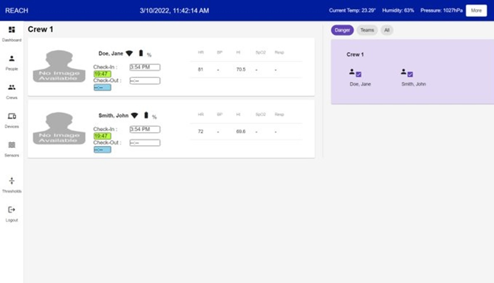
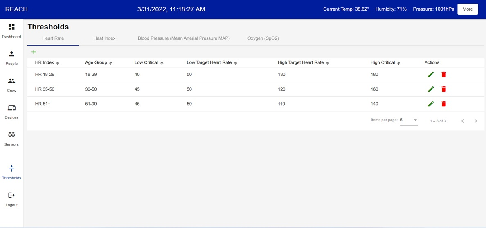
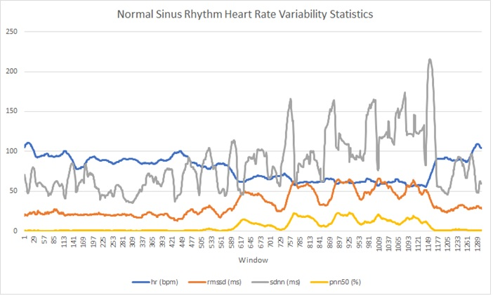
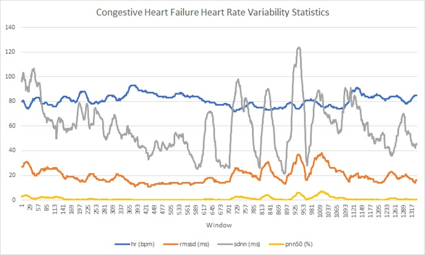

Real Time Emergency Communication System for HAZMAT Incidents (REaCH)
Purpose of REaCH System
The goal of the REaCH () project is to develop a real-time interactive dashboard application that captures and displays first responders' and transportation workers' health data and environmental exposure information to an incident commander during a HAZMAT transportation incident. The REaCH application monitors individual health parameters and helps Incident Commanders evaluate if an individual needs to be removed from the scene due to their health status being compromised.
The REaCH application utilizes the latest IoT technology integrating multiple IoT sensors that capture human and environmental data, using a real-time communication network , refer Figure 1 for the communication architechture.

Figure 1 : Communication architecture flow from sensors to users
Ojectives
1. Create an integrated sensor dashboard that monitors first responders’ health during a HAZMAT incident using IoT sensors and devices to collect real-time data
2. Provide students hands-on experience from developing an IoT application and conducting human computer interaction research
3. Collaborate with community transportation partners and first responder agencies
4. Develop state-of-the-art visualizations for uncertainty data
Development Approach
Research Approach
The team employed several research approaches and methods, including requirements gathering and data analysis to understand the needs of the stakeholders in the HAZMAT response field. We conducted interviews and a focus group workshop, and surveyed biosensor, HAZMAT, and first responder health concerns literature. We met with subject matter experts (SMES) in Omaha and around the world at the FDIC International conference in Detroit.
Beging with defining the REaCH system requirement, we move from conceptual technology ideas and visions to building, testing, and evaluating working prototypes in the field with end users. We are following best practices in an iterative development approach known as Agile Development. We are employing the IT Industry Standards Unified Modeling Techniques as part of our analysis efforts.
REaCH Architecture
In this research, we integrated the Kestrel DROP wireless sensor to collect environmental data to monitor the Ambient Heat Index and Polar H10 to collect heart rate from the sensors placed inside the First Responder’s PPE suit. The sensors implement a Bluetooth Low Energy communication protocol which is a low-power wireless communication technology. The REaCH system must be able to establish connectivity and reliably stream live, accurate data from the sensor smoothly to achieve the goal of the research.
Refer Figure 2 for IoT communication architecture implemented for smooth and reliable real-time data streaming from the sensors:

Figure 2 : IoT communication architecture
REaCH Dashboard Examples
Dashboard Front Page showing available crews and first responders:
Dashboard Threshold Page showing heart rate thresholds for monitoring:
Heart Rate Variability Statistics:Below you can see a 30-minute window that moves incrementally 1 minute, from a 24-hr ECG recording of a subject.
 REaCH Research Team
- Research Scientists: Dr. Ann Fruhling, PI, Dr. Aaron Yoder, Co-PI, Dr. Sharon Medcalf, Co-PI, Dr. Dario Ghersi, Co-I
- Community Partner: FF Stanley Shearer, OFD
- Current Graduate Students: Elizabeth Reisher,Justin Fay,Matthew Thiele,Soundarya Jonnalagadda,Troy Suwondo
- Past Graduate Students: Anusha Manda,Chaitra Venkatesan,Dawei Li,Hitesh Kumar,Jackson Urrutia,Jacob Grothe,Jason Ellicott,Kaitlyn Baysa,Krishna Kumari,Naveena Akula,Ru Ng,Suzanne Fendrick,Vikas Sahu
- Technical Consultants: Mr.Greg Hoff, Mr.John Rogers
Publications
Department of Transportation & Funding
Mid-America Transportation Center - matc.unl.edu
US Department of Transportation
DOT Sponsor Award Number 25-1121-0005-110
MATC: 69A3551747107
Project Award: 2016 – 2021, $944,912

Contact
Ann L. Fruhling, PhD, MBA
Professor, School of Interdisciplinary Informatics
Charles W. and Margre H. Durham Distinguished Professor of Information Science and Technology
Co-Director, Nebraska University Center for Biomedical Informatics Research and Innovation
Director, Consortium for Public Health Informatics Research Lab
College of Information Science and
Technology
University of Nebraska at Omaha
PKI
280A
(402)554-4968
afruhling@unomaha.edu

"Don't dream your life, live your dreams."